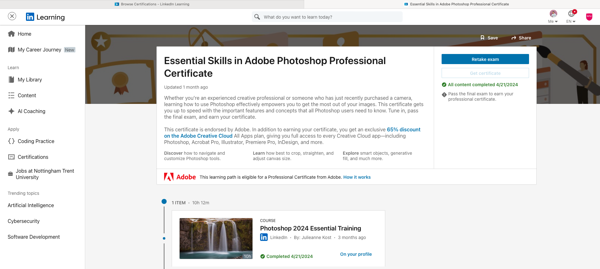
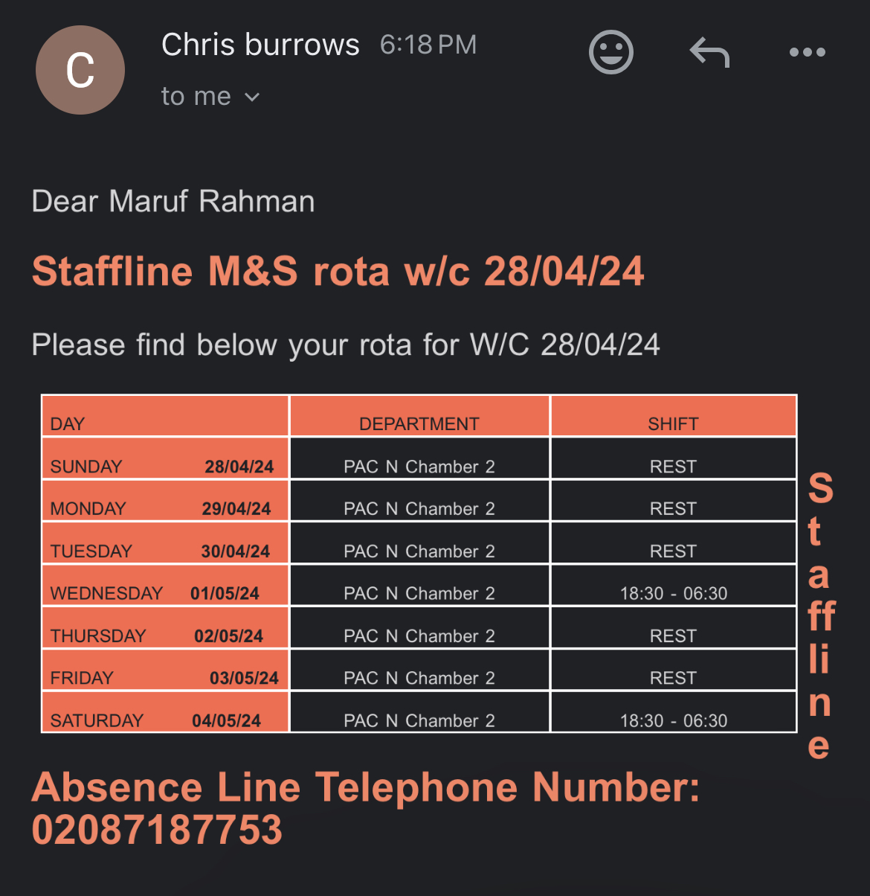
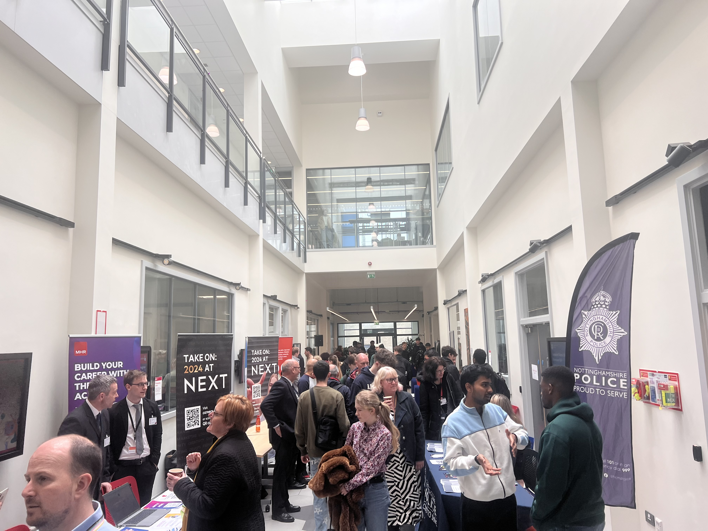
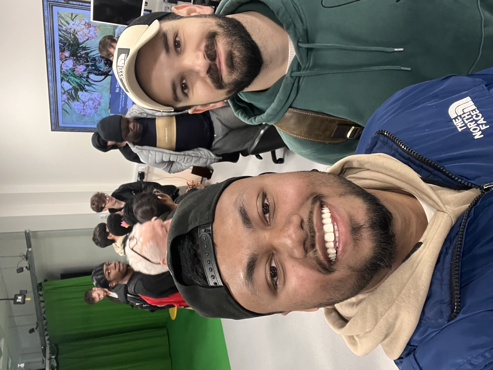
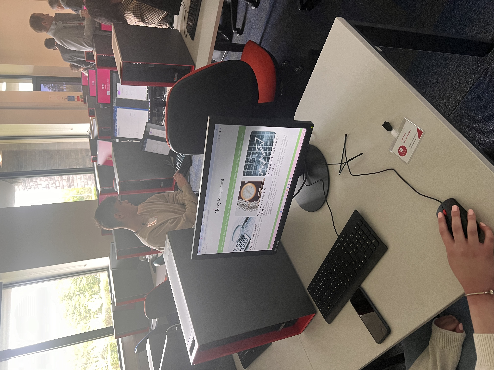

Knowledge and Skills Development
For the further improvement I have identified some areas. I have taken some short-term online course to develop my skills and strength for my personal portfolio. The following course I have done:
Python Data Analysis for Healthcare: In software engineering, "Python Data Analysis for Healthcare" is essential for creating data-driven healthcare solutions and enhancing patient outcomes. Click here to view certificate.
Prompt Engineering: In software engineering, prompt engineering is essential for improving model accuracy and efficiency as well as AI interaction optimisation. Click here to view certificate.
Spatial Mixing in Dolby Atmos using Pro Tools: Dolby Atmos' spatial mixing improves immersive experiences, which is important for software engineering in multimedia and virtual reality applications. Click here to view certificate.
Software Architecture Foundations: In order to develop scalable, reliable systems and guarantee effective, error-free applications, "Software Architecture Foundations" is essential reading for software engineers. Click here to view certificate.
Data Literacy: Exploring and Describing Data: In software engineering, data literacy is essential for making defensible decisions and optimising systems through precise data interpretation. Click here to view certificate.
Adobe photoshop: In sftware engineering photshop needed for praphics editng. That is why I have done 10 hourse course online.

Artificial Intelligence Foundations: Machine Learning: Software engineers need to read "AI Foundations: Machine Learning" to build predictive models and automate decision-making procedures. Click here to view certificate
Some of the areas like communication skills I have joined student society where I have hosted events (which was more six hours) with other members. Where I have gained plenty of experience communicating with other people from different countries. I have been working part time (22 hours per week) get to experience working with computer system and AI robots.

In the workshop I have got chance to talked to final year student how they did they final year course work it was about 4 hours.
